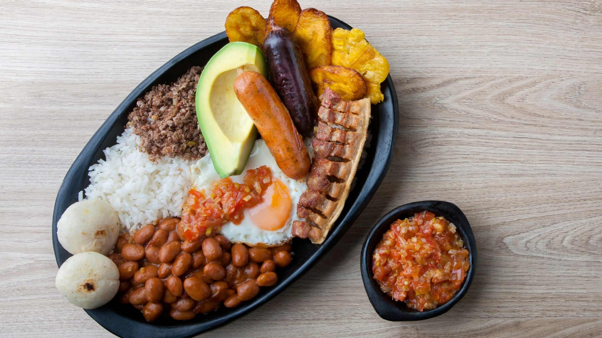

Bandeja paisa

Descripcion
La bandeja paisa es uno de los platos más representativos de Colombia y la insignia de la gastronomía antioqueña, y es propio de esta región, Antioquia
Ingredientes
- 1/2 libra de frijoles rojos, remojados desde la noche anterior
- 1 cucharada de aceite de oliva
- 1 cebolla mediana, picada
- 2 dientes de ajo, picados
- 1 cucharadita de comino molido
- 1 cucharadita de orégano seco
- 1/2 cucharadita de pimienta negra molida
- 1/2 cucharadita de sal
- 1/2 taza de arroz blanco
- 1/2 libra de carne molida
- 1 chorizo antioqueño, cortado en rodajas
- 1 huevo, batido
- 1 plátano maduro, cortado en rodajas
- 1 aguacate, pelado y picado
- 4 arepas
Pasos
- Prepara los frijoles. En una olla grande, calienta el aceite de oliva a fuego medio. Agrega la cebolla y el ajo y cocina hasta que estén suaves, aproximadamente 5 minutos. Agrega los frijoles, el comino, el orégano, la pimienta y la sal. Cubre con agua y cocina a fuego lento durante 1 hora o hasta que los frijoles estén tiernos.
- Cocina el arroz. Sigue las instrucciones del paquete para cocinar el arroz blanco.
- Cocina la carne molida. En una sartén grande, cocina la carne molida a fuego medio hasta que esté dorada. Agrega el chorizo y cocina hasta que esté caliente.
- Fríe el huevo. Bate el huevo y fríelo en una sartén con aceite caliente hasta que esté cocido al gusto.
- Cocina el plátano maduro. Fríe las rodajas de plátano maduro en aceite caliente hasta que estén doradas.
- Arma la bandeja paisa. Coloca los frijoles, el arroz, la carne molida, el chorizo, el huevo, el plátano maduro, el aguacate y las arepas en una bandeja. Sirve y disfruta.